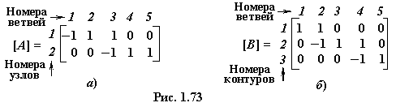

1.3.1. Узловая и контурная матрицы
Узловая матрица [A] (рис. 1.73а) представляет собой таблицу, строки которой соответствуют независимым узлам направленного графа цепи, а столбцы - её ветвям. Значения элементов узловой матрицы определяются следующим образом.
|  |
Контурная матрица [В] (рис. 1.73б) представляет собой таблицу, строки которой соответствуют независимым контурам цепи, а столбцы - её ветвям (см. рис. 1.72б).
Элементы матрицы имеют следующие значения: если контур j содержит ветвь k и направление обхода контура совпадает с направлением ветви, то элемент матрицы имеет значение +1, а если ветвь направлена против обхода контура, то -1, если ветвь не входит в контур, то ей присваивают нулевое значение.